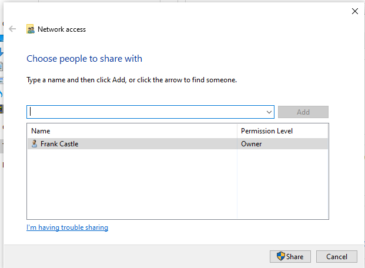

In local disc c of frank castle make a new folder named Share
right click on share and click on properties and click on share then share wapas daba

then click yes
now join to our donain
grab ip adress of domain

open network and internet settings change adapter options
click on change adapter options
 4
4
diuble click on ipv4

in preferred dns use ip address of domian controller
search domain and open access work or school

click on join this device ./


then press skip
frank caslte would log into THEPUNISHER
peter parker wuld log into SPIDERMAN

log into other user
username:fcastle
password:Password1
then signout kar and login(other user) as
marvel\adminsitrator
password:P@$$w0rd!
we are doing this so that we set fcastle as local adminstrator on this machoine
we wanna do a special attack that involve usage of local adminsitrators on multiple machines
open computer management

enter fcastle
then check names ko click
then aplly then ok
do same steps for peter parker machine
and in adding section remeber to add fcastle as well as pparker
coz in this machine u need bpth for the attack to be successfyul
frank has adminsitrativeaccess on both the machines


thus we are connected and now we are set up